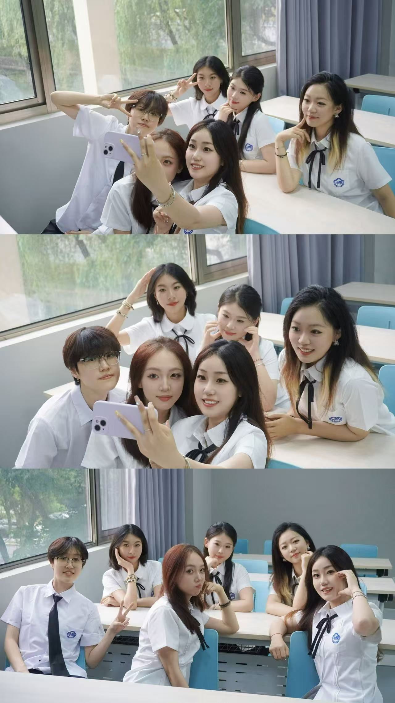
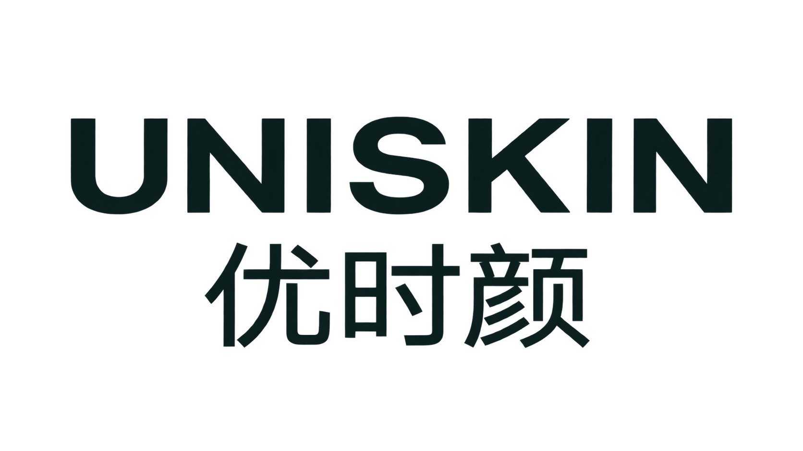
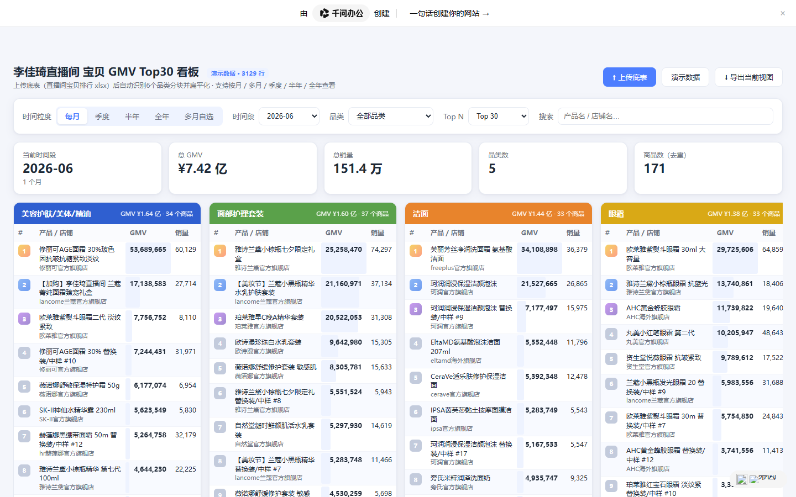
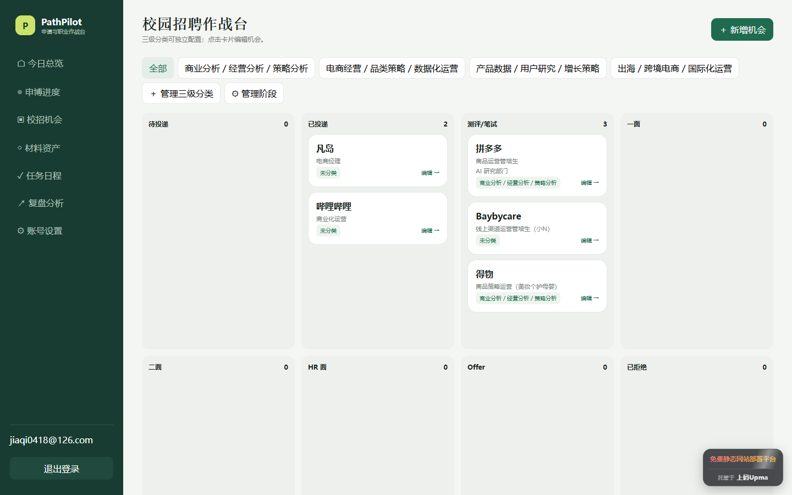
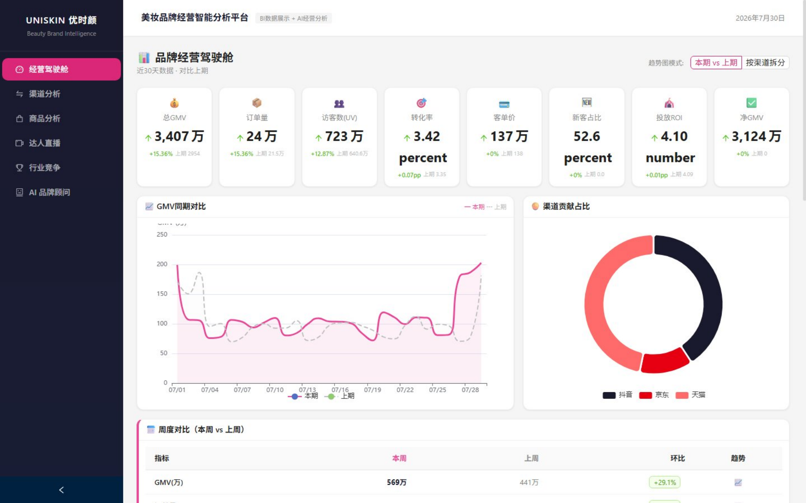
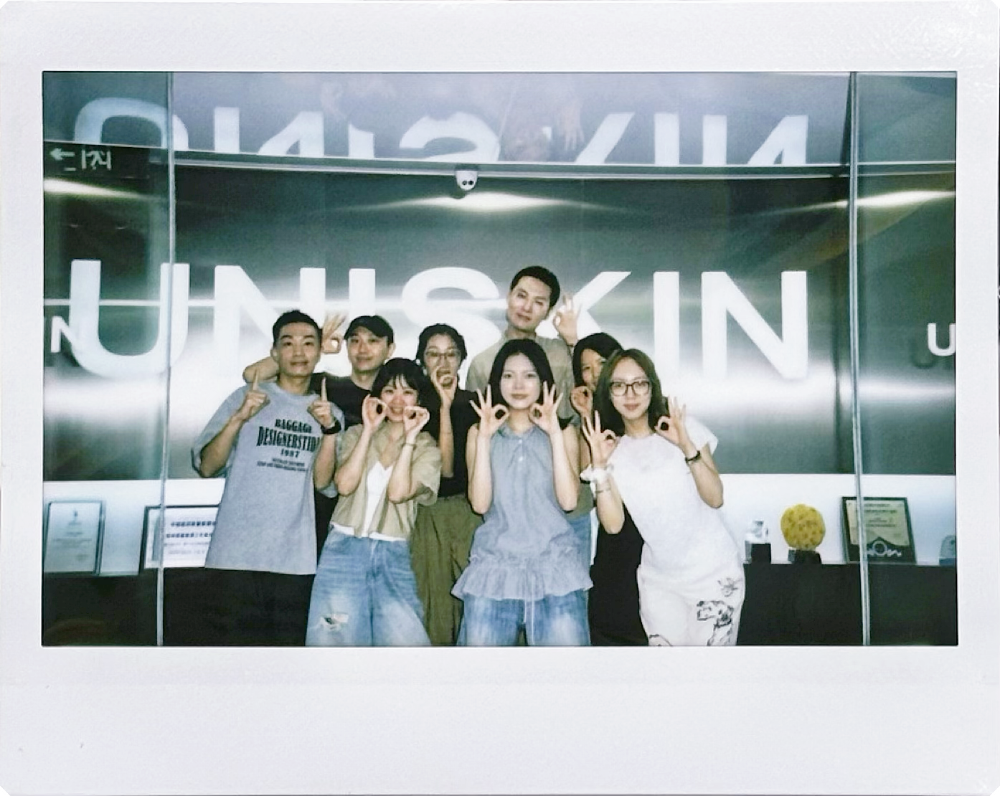
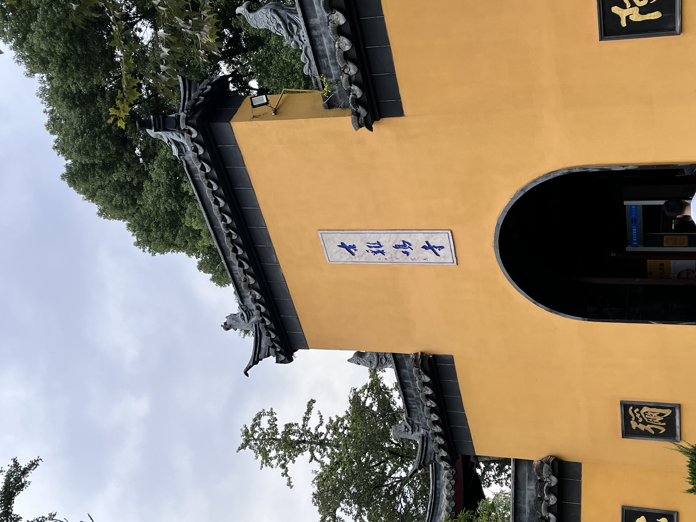
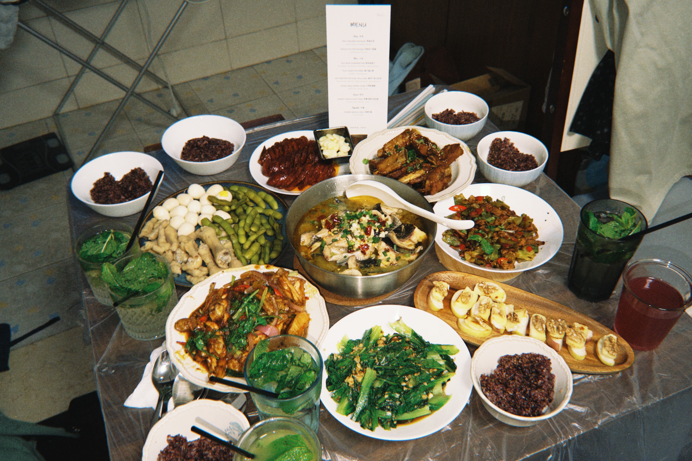

HELLO / 你好，很高兴认识你
我是郝嘉琪。
看清市场、理解用户，
也让数据变成行动。
关注电商运营、市场研究与用户研究，喜欢把分散的信息整理成清晰、可执行的业务判断。
市场营销电商运营数据分析
从模型出发，
走向真实业务。
走向真实业务。
02 / CAMPUS
校园经历
本科建立数据与金融基础，硕士阶段把研究方法带进市场问题。
03 / PROJECT EXPERIENCE
三个项目，三种真实问题。
点击项目切换，查看问题、方法与结果。RESEARCH QUESTION一款新产品，怎样找到
最先愿意购买的人？
USER INSIGHT · MARKET ENTRY最先愿意购买的人？
谁会买→为什么买→如何进入
中风远程康复产品内地市场冷启动，找到核心购买群体、目标市场与影响因素。
围绕院外卒中康复系统 WeHab，检验产品接受度，并把消费者证据转化为定位和 4P 进入策略。
概念测试→因子分析→回归验证→市场策略
- 18 项核心产品属性
- 0.881 解释力度 R²
产品平台+智能硬件+疗法证据
CORE QUESTION一场电商直播，怎样真正
产出可复用的增长方法？
LIVE COMMERCE · RURAL REVITALIZATION产出可复用的增长方法？
拆节点→调策略→沉淀方法
从田间调研到直播推广，把一次暑期实践做成可复盘的电商助农项目。
线下走访水蜜桃与葡萄基地，梳理农产品和村民的电商需求；线上拆分直播节点，持续调整选品、讲解脚本和互动节奏。
田间调研→电商科普→直播推广→媒体传播
- ≈20% 单场 GMV 提升
- 6w+ 直播点赞
- 6+ 校内外媒体报道
田间调研→直播推广→媒体报道
✦✦
奇奇妙妙摄影QIQIMIAOMIAO STUDIO
CORE QUESTION一次商业拍摄，怎样从创意
走到稳定交付与持续合作？
CONTENT STRATEGY · DELIVERY走到稳定交付与持续合作？
定方案→做拍摄→促复购
让内容不只好看，也能推动一次真实合作落地。
围绕垂类账号做竞品、受众与场景分析，把选题判断转化为拍摄方案、内容交付和客户沟通。
竞品观察→选题设计→拍摄执行→内容复盘
- 150+ 垂类内容项目
- 10+ 场拍摄落地
- 4 年 持续参与

04 / WORK EXPERIENCE · UNISKIN
用数据连接渠道表现与营销决策。
- 时间
- 2026年7月—至今
- 部门
- 优时颜品牌营销——通路行销&数据部
- 岗位
- 营销数据岗

CHANNEL TRACKING
每天的收入与预算，哪里出现异常？
独立负责 6 张经营表，覆盖天猫、抖音两大渠道，按日、周、月、季度与半年五个周期追踪收入预算和销售情况；日均处理 2k+ 数据，并围绕重点品、行业研究与日常经营，监测 GMV、投入花费、ROI、流量与转化率等指标。
收入预算→销售表现→异常定位
- 0日均处理数据
- 0独立负责经营表
- 0经营追踪周期
COMPETITOR STUDY
竞品靠什么增长，直播是否挤压自营？
固定追踪洁面、眼霜、面霜与防晒四类重点产品，在天猫、抖音覆盖 20+ 品牌；一方面拆解增长趋势、上新节奏与营销动作，另一方面对照天猫整体、自营与李佳琦直播口径，判断直播节点对品牌自营的真实影响。
重点产品→营销动作→渠道影响
- 0重点产品品类
- 0持续追踪品牌
- 0覆盖电商平台
HBN−85.0%节点性迁移至简+124.9%并非稳定挤压芙丽芳丝+68.8%需求增量
INDUSTRY RESEARCH
增长正在向哪些平台、品类与产品迁移？
围绕 GMV 与 ROI 两个核心结果，整合天猫与抖音行业数据，从平台、细分品类、品牌、产品和 Top 榜单逐层拆解；覆盖 8 个护肤细分品类，并将研究结论沉淀为 3 份专题分析。
GMV / ROI→平台与品类→品牌与产品
- 0专题分析
- 0护肤细分品类
- 0覆盖电商平台
淘抖整体+9.9%淘宝 GMV−8.6%
洁面化妆水精华
AI EFFICIENCY
怎样把重复取数变成可复用的工具？
从 0 到 1 搭建直播间产品经营分析工具，将 Excel 拖拽上传、字段自动映射、6 类品类识别、跨周期筛选与结果导出固化为标准流程，把单日报处理从约 1 小时缩短到约 0.4 小时。
原始底表→自动处理→复用工具
- 0单日报处理提效
- 0自动识别品类
- 0GMV 异常识别反馈

打开网页作品 ↗05 / AI CODING
工作之外，我还在做两件事。
一个已经上线使用，一个正在把真实业务流程产品化。
查看完整网页 ↗ 已上线PathPilot 个人申请工作台
针对求职信息分散、申请节点繁多、跟进状态难以统筹的问题，设计一体化申请工作台，将岗位机会、截止时间、申请材料与进度集中管理，让待办更清晰、优先级更明确，支持有序推进每一次申请。
打开网页作品 ↗{kind=link}

浏览全部 6 个页面 ↗ 界面演示 · 数据为模拟数据 正在产品化AI 品牌经营复盘助手
针对多渠道经营数据分散、指标口径复杂、人工复盘重复耗时的问题，设计 AI 辅助复盘工具，将数据整理、指标分析与异常诊断串联为统一流程，帮助团队从报表中定位经营问题，为资源分配与营销调整提供依据。
浏览全部 6 个页面 ↗
WHAT HAPPENED?
WHAT SHOULD WE DO?
02 / HOW I THINK
不止整合数据，
更解释数据背后的
用户与市场。
我习惯先还原问题，再选择指标和方法。数据负责描述变化，市场帮助定位机会，用户则解释变化为什么发生。
- 01整理统一口径，让信息可以比较
- 02拆解沿渠道、人群与场景寻找变量
- 03行动把判断翻译成下一步方案
02 / THREE CONNECTED LENSES
三种视角，
一条判断链路。
它们解决不同问题，但最终都指向同一件事：减少模糊，让下一步更有依据。
01整理统一口径，让信息可以比较
→02拆解沿渠道、人群与场景寻找变量
→03行动把判断翻译成下一步方案
DATA DECOMPOSITION
把复杂业务拆成
可比较、可追踪、
可行动的指标。
原始数据→指标关系→经营动作
- 口径整理与取数 SOP
- 渠道、漏斗与 ROI 拆解
- 日报、复盘与异常定位
MARKET ANALYSIS
不只判断市场大小，
更找到值得进入的
机会坐标。
行业供需→竞争地图→进入策略
- 行业趋势与细分类目研究
- 竞品、价格带与渠道比较
- 市场规模与机会优先级
USER INSIGHT
从行为与反馈里，
识别需求、障碍与
真实使用场景。
用户表达→人群分层→场景方案
- 问卷设计与需求验证
- 用户画像、分层与旅程
- 痛点提炼与信息转译
关于数字不做跨经历的“大汇总”。方法在这里展示，结果回到每一段真实经历里单独说明。
CASE 01
竞品研究 · 渠道分析 · 经营判断
头部直播，究竟带来新增，
还是让成交换了地方？
我把五个洁面竞品的天猫整体、自营与李佳琦渠道放在同一口径下，追踪直播节点前后的变化。
2025.10 直播节点成交高度集中，
成交高度集中，
自营短期回落。
李佳琦贡献天猫销售 96.2%，自营环比 −85.0%，次月迅速恢复。
节点性渠道迁移9月
702万
702万
10月
直播2657万
直播2657万
11月
2104万
2104万
三个主要直播节点有迁移迹象，
有迁移迹象，
但并非稳定规律。
两次自营下降 −79.5% / −28.2%；另一次直播放量时，自营反而 +124.9%。
阶段性挤压2025.05−79.5%
2025.10+124.9%
2026.05−28.2%
三个主要直播节点直播放量，
直播放量，
自营也同步增长。
自营分别增长 +68.8% / +19.7% / +25.3%，更接近需求增量与渠道协同。
直播带来增量CASE 02
淘抖美肤市场 · 品类研究
我把两个平台放在一起，
看见了两种增长方向。
这不是一份被搬上网页的行业报告，而是我从数据里留下的几页研究手记。
TMALL / 货架DOUYIN / 内容
FIRST OBSERVATION
市场还在增长，
但增长没有平均发生。
2026年上半年，美肤市场整体GMV同比增长约9.9%。拆开渠道后，方向完全不同。
淘抖整体9.9%
市场仍在增长
淘宝 GMV−8.6%
货架渠道回落
热门，不等于机会。
关键是增长来自哪里。
CASE 03
直播复盘 · VIBE CODING · AI 产品原型
我不想一直搬运数字，
于是把复盘做成了可以追问的工具。
从李佳琦直播 Top30 看板，到 AI 品牌经营复盘助手：重复工作被整理成一条可以复用的分析链路。
01 / 已完成把分散直播明细，整理成可筛选的品类与商品排行。
数据已接入W30 · 21条销售记录
识别任务调用分析模块生成建议
异常不在转化，
而在流量入口。
数据发现
天猫UV下降，转化率基本稳定；流量端是本次波动的主要来源。
原因判断
搜索流量回落，需要结合品牌词份额与竞品投放进一步验证。
下一步
优先检查搜索入口，再决定是否调整投放和商品承接。
我做的不只是界面我把真实工作拆成字段识别、指标计算、原因分析和行动建议。
03 / SELECTED WORK
从发现一个异常，
到理解一片市场。
三个项目不是三份报告，而是我从识别问题、理解市场，到把方法做成工具的完整过程。
最初，我面对的只是一张不断更新的直播数据表。
直播增长，究竟是新增需求，
还是成交换了地方？
我把 HBN、至简、芙丽芳丝等洁面竞品的天猫自营与李佳琦渠道放在同一口径下，观察直播节点前后的绝对销售变化。
HBN自营 −85.0%至简阶段性迁移芙丽芳丝自营同步增长
同样进入头部直播，结果却不是同一条路。
但只看几个竞品，还不足以理解市场。
我把淘宝和抖音放在一起，
看见了两种增长方向。
2026年上半年，美肤市场仍在增长；拆开渠道后，淘宝回落、抖音放量。增长不是平均发生，而是沿平台和品类重新分布。
+9.9%淘抖整体−8.6%淘宝GMV+21.1%抖音GMV
热门不等于机会，关键是增长来自哪里。
当整理、拆解和解释不断重复，我开始追问另一件事。
这些分析方法，
能不能被工具记住？
我先做了李佳琦直播 Top30 看板，再把真实复盘流程拆成数据上传、指标计算、AI 诊断与行动建议，形成 AI 品牌经营复盘助手 MVP 原型。
从看见数字，到解释原因，再到明确下一步。
01 / CHANNELDATA → JUDGEMENT → TOOL
直播节点2025.10自营销售变化
HBN−85.0%渠道迁移
至简+124.9%并非稳定挤压
芙丽芳丝+68.8%需求增量
TMALL−8.6%
68.6%成交来自抖音
+195.6%非液态精华
+28.5%化妆水
+13.4%洁面
AI REVIEW ASSISTANTMVP PROTOTYPE
Excel→指标→诊断→行动
异常诊断 / AI DIAGNOSIS
异常不在转化，
异常不在转化，
而在流量入口。
数据发现天猫UV下降，转化率基本稳定。
原因判断流量入口是本次波动的主要来源。
下一步优先检查搜索入口与商品承接。
先别急着下结论，
让我再拆一层。
04 / MY JOURNEY
我不是突然会做分析的。
每一步，都在靠近真实业务。
从课堂里的模型，到项目中的用户，再到实习里的渠道与销售——方法没有被割裂，而是在一次次真实问题里长出来。
01 / FOUNDATION
先学会用数字，
描述一个复杂世界。
金融工程、计量经济学、Python 与机器学习，让我习惯先拆变量、找关系，再形成判断。- 南京航空航天大学 · 金融学
- 从模型与数据中建立结构化思维
STRUCTURED THINKING
02 / PRACTICE
数字第一次，
和真实成交连在一起。
在阳山水蜜桃助农项目中，我开始关注直播节奏、用户流失节点与 GMV，不只是“做内容”，而是追问内容怎样影响成交。- 直播复盘 · 流失节点 · GMV
- 从结果数字回看运营过程
TO CONVERSION
03 / RESEARCH
从“算得出来”，
走向“解释得清楚”。
硕士阶段的实证研究与市场项目，让我更重视口径、假设和证据链，也开始把用户差异带进市场判断。- 东北财经大学 · 国际贸易学
- 专业排名 1 / 30 · GPA 4.4 / 5.0
EVIDENCE · ANSWER
04 / BUSINESS
让分析离业务近一点，
也离行动近一点。
在优时颜，我把方法放进日报、渠道复盘、竞品研究和代言人追踪中：数据不再是作业，而是下一步行动的依据。- 销售监控 · 渠道拆解 · 竞品研究
- 从发现问题到支持经营判断

JUDGEMENT CLOSE TO ACTION
现在，我希望继续做的，是把数据、市场与用户放在同一张图里，找到真正值得行动的答案。
05 / AI CODING
遇到重复的问题，
我也会试着自己做工具。
这里不再讲研究结论，只展示我怎样借助 AI，把需求变成能够打开、操作和继续迭代的网页。
GMV TOP30 / LIVE COMMERCE
12进行中4本周截止3待跟进
下一步，我正在把真实品牌周度复盘流程做成：
AI 品牌经营复盘助手
上传 Excel → 自动质检 → 指标计算 → AI 诊断 → 行动建议06 / LIFE NOTES
理性地处理数据，
也感性地记录生活。
工作之外，我用旅行、摄影、做饭和现场音乐，继续练习观察、耐心与好奇心。


左右滑一滑，解锁生活里的另一个我